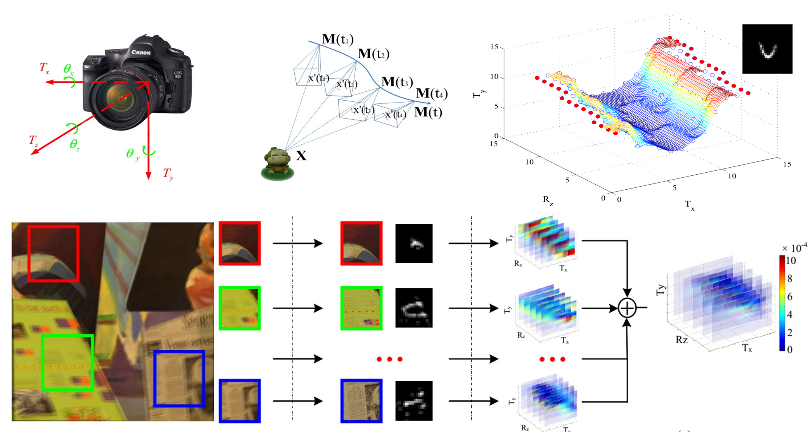
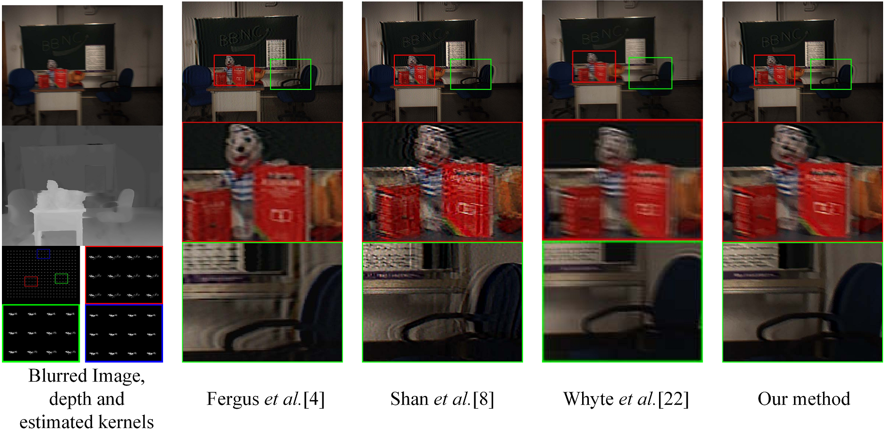

|
High-Dimensional Camera Shake Removal with Given Depth Map |
|
Tao Yue, Jinli Suo, Qionghai Dai Deptartment of Automation, Tsinghua University |
|  |
|
Abstract Camera motion blur is drastically nonuniform for large depth-range scenes, and the nonuniformity caused by camera translation is depth dependent but not the case for camera rotations. To restore the blurry images of large-depthrange scenes deteriorated by arbitrary camera motion, we build an image blur model considering 6-degrees of freedom (DoF) of camera motion with a given scene depth map. To make this 6D depth-aware model tractable, we propose a novel parametrization strategy to reduce the number of variables and an effective method to estimate high-dimensional camera motion as well. The number of variables is reduced by temporal sampling motion function, which describes the 6-DoF camera motion by sampling the camera trajectory uniformly in time domain. To effectively estimate the high-dimensional camera motion parameters, we construct the probabilistic motion density function (PMDF) to describe the probability distribution of camera poses during exposure, and apply it as a unified constraint to guide the convergence of the iterative deblurring algorithm. Specifically, PMDF is computed through a back projection from 2D local blur kernels to 6D camera motion parameter space and robust voting. We conduct a series of experiments on both synthetic and real captured data, and validate that our method achieves better performance than existing uniform methods and nonuniform methods on large-depth-range scenes. |
|
Results  |
|
Bibtex
@article{yue2014highdim,
title={High-dimensional camera shake removal with given depth map},
author={Yue, Tao and Suo, Jinli and Dai, Qionghai},
journal={IEEE Transactions on Image Processing},
volume={23},
number={6},
pages={2688-2703},
year={2014},
organization={IEEE}
}
|
|
Publications
|